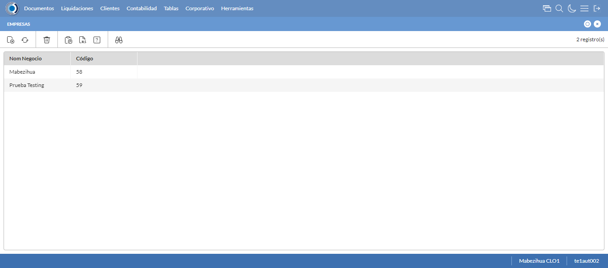
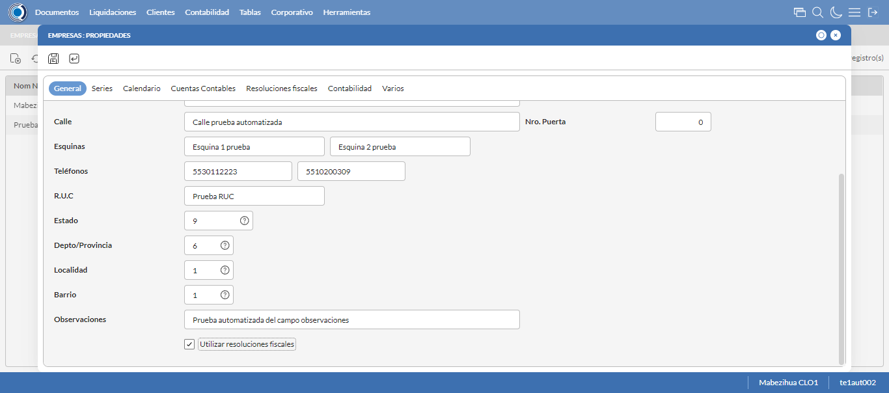
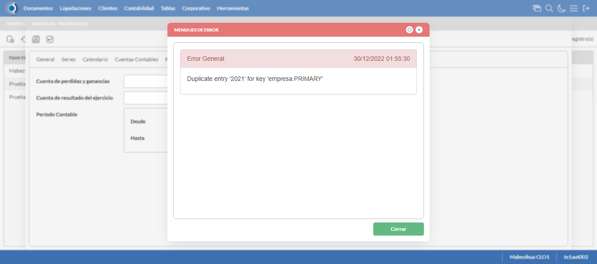
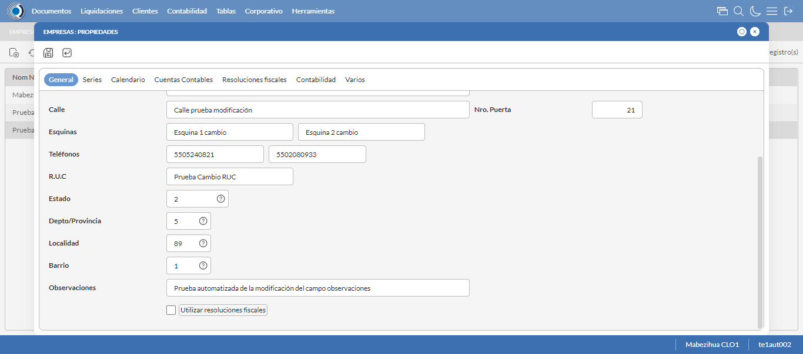
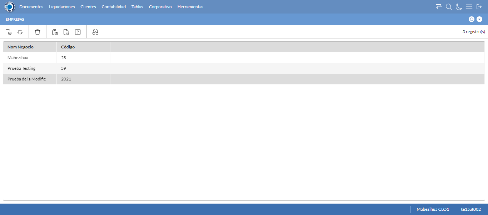

Desarrollado por : Area de Testing PWST
Fecha y hora de inicio : 2022-12-29 19:54:32
Duracion : 0:01:33.178305
Resultado : Total 8，Correctos 6 ，Errores 2 ，Taza de resultado 75.00%
Resumen 75.00% Errores 2 Fallidos 0 Correctos 6 Test realizados 8
| Caso de Prueba | Total | Correctos | Fallido | Error | Detalles | Captura del error |
| Empresas.Test: Escenario 1 de Empresas | 8 | 6 | 0 | 2 | Detalles | |
test |
ft1_1: 2022-12-29 19:54:33,104 - root - INFO - Se abre el chrome
2022-12-29 19:54:34,557 - root - INFO - Entra a la URL
2022-12-29 19:54:34,705 - root - INFO - Maximiza la pantalla
Traceback (most recent call last):
File "C:\Users\gerar\AppData\Local\Programs\Python\Python311\Lib\site-packages\selenium\webdriver\remote\switch_to.py", line 88, in frame
frame_reference = self._driver.find_element(By.ID, frame_reference)
^^^^^^^^^^^^^^^^^^^^^^^^^^^^^^^^^^^^^^^^^^^^^^^^^
File "C:\Users\gerar\AppData\Local\Programs\Python\Python311\Lib\site-packages\selenium\webdriver\remote\webdriver.py", line 861, in find_element
return self.execute(Command.FIND_ELEMENT, {"using": by, "value": value})["value"]
^^^^^^^^^^^^^^^^^^^^^^^^^^^^^^^^^^^^^^^^^^^^^^^^^^^^^^^^^^^^^^^^^
File "C:\Users\gerar\AppData\Local\Programs\Python\Python311\Lib\site-packages\selenium\webdriver\remote\webdriver.py", line 444, in execute
self.error_handler.check_response(response)
File "C:\Users\gerar\AppData\Local\Programs\Python\Python311\Lib\site-packages\selenium\webdriver\remote\errorhandler.py", line 249, in check_response
raise exception_class(message, screen, stacktrace)
selenium.common.exceptions.NoSuchElementException: Message: no such element: Unable to locate element: {"method":"css selector","selector":"[id="mainFrame"]"}
(Session info: chrome=108.0.5359.125)
Stacktrace:
Backtrace:
(No symbol) [0x00D2F243]
(No symbol) [0x00CB7FD1]
(No symbol) [0x00BAD04D]
(No symbol) [0x00BDC0B0]
(No symbol) [0x00BDC22B]
(No symbol) [0x00C0E612]
(No symbol) [0x00BF85D4]
(No symbol) [0x00C0C9EB]
(No symbol) [0x00BF8386]
(No symbol) [0x00BD163C]
(No symbol) [0x00BD269D]
GetHandleVerifier [0x00FC9A22+2655074]
GetHandleVerifier [0x00FBCA24+2601828]
GetHandleVerifier [0x00DD8C0A+619850]
GetHandleVerifier [0x00DD7830+614768]
(No symbol) [0x00CC05FC]
(No symbol) [0x00CC5968]
(No symbol) [0x00CC5A55]
(No symbol) [0x00CD051B]
BaseThreadInitThunk [0x76347D69+25]
RtlInitializeExceptionChain [0x7731BB9B+107]
RtlClearBits [0x7731BB1F+191]
During handling of the above exception, another exception occurred:
Traceback (most recent call last):
File "C:\Users\gerar\AppData\Local\Programs\Python\Python311\Lib\site-packages\selenium\webdriver\remote\switch_to.py", line 91, in frame
frame_reference = self._driver.find_element(By.NAME, frame_reference)
^^^^^^^^^^^^^^^^^^^^^^^^^^^^^^^^^^^^^^^^^^^^^^^^^^^
File "C:\Users\gerar\AppData\Local\Programs\Python\Python311\Lib\site-packages\selenium\webdriver\remote\webdriver.py", line 861, in find_element
return self.execute(Command.FIND_ELEMENT, {"using": by, "value": value})["value"]
^^^^^^^^^^^^^^^^^^^^^^^^^^^^^^^^^^^^^^^^^^^^^^^^^^^^^^^^^^^^^^^^^
File "C:\Users\gerar\AppData\Local\Programs\Python\Python311\Lib\site-packages\selenium\webdriver\remote\webdriver.py", line 444, in execute
self.error_handler.check_response(response)
File "C:\Users\gerar\AppData\Local\Programs\Python\Python311\Lib\site-packages\selenium\webdriver\remote\errorhandler.py", line 249, in check_response
raise exception_class(message, screen, stacktrace)
selenium.common.exceptions.NoSuchElementException: Message: no such element: Unable to locate element: {"method":"css selector","selector":"[name="mainFrame"]"}
(Session info: chrome=108.0.5359.125)
Stacktrace:
Backtrace:
(No symbol) [0x00D2F243]
(No symbol) [0x00CB7FD1]
(No symbol) [0x00BAD04D]
(No symbol) [0x00BDC0B0]
(No symbol) [0x00BDC22B]
(No symbol) [0x00C0E612]
(No symbol) [0x00BF85D4]
(No symbol) [0x00C0C9EB]
(No symbol) [0x00BF8386]
(No symbol) [0x00BD163C]
(No symbol) [0x00BD269D]
GetHandleVerifier [0x00FC9A22+2655074]
GetHandleVerifier [0x00FBCA24+2601828]
GetHandleVerifier [0x00DD8C0A+619850]
GetHandleVerifier [0x00DD7830+614768]
(No symbol) [0x00CC05FC]
(No symbol) [0x00CC5968]
(No symbol) [0x00CC5A55]
(No symbol) [0x00CD051B]
BaseThreadInitThunk [0x76347D69+25]
RtlInitializeExceptionChain [0x7731BB9B+107]
RtlClearBits [0x7731BB1F+191]
During handling of the above exception, another exception occurred:
Traceback (most recent call last):
File "C:\xampp\htdocs\versiones\automatizaciones\AutoPWST\01EMP\testCase\Empresas.py", line 30, in test
self.driver.switch_to.frame("mainFrame")
File "C:\Users\gerar\AppData\Local\Programs\Python\Python311\Lib\site-packages\selenium\webdriver\remote\switch_to.py", line 93, in frame
raise NoSuchFrameException(frame_reference)
selenium.common.exceptions.NoSuchFrameException: Message: mainFrame
|
|
||||
test_000: Ingresa a la base de datos |
pt1_2: 2022-12-29 19:54:37,778 - root - INFO - Escribe el usuario
2022-12-29 19:54:37,836 - root - INFO - Escribe la contraseña
2022-12-29 19:54:37,890 - root - INFO - Se dio clic en el boton ingresar
2022-12-29 19:54:40,136 - root - INFO - Ejecutar Enterprise
2022-12-29 19:54:44,178 - root - INFO - Cambia entre pestañas
|
|
||||
test_001: Abre menu y ejecuta pantalla |
pt1_3: 2022-12-29 19:55:05,438 - root - INFO - Abre la pantalla de Empresas
2022-12-29 19:55:05,986 - root - INFO - La pantalla ejecutada es Empresas
2022-12-29 19:55:05,987 - root - INFO - Captura: C:\xampp\htdocs\versiones\automatizaciones\AutoPWST\01EMP\report\img screen：20221229_19_55_05.png
2022-12-29 19:55:06,128 - root - INFO - Se presiona el boton 'Nuevo', para crear un nuevo registro.
|
 | ||||
test_002: Abre la ventana de nuevo y crear un registro |
pt1_4: 2022-12-29 19:55:06,683 - root - INFO - Se abrio la pantalla para el ingreso de un registro nuevo.
2022-12-29 19:55:06,741 - root - INFO - Ingresa el codigo del nuevo registro
2022-12-29 19:55:06,863 - root - INFO - Ingresa la descripción del nuevo registro
2022-12-29 19:55:06,929 - root - INFO - Ingresa el codigo alternativo del nuevo registro
2022-12-29 19:55:07,002 - root - INFO - Ingresa el codigo GLN del nuevo registro
2022-12-29 19:55:07,072 - root - INFO - Ingresa la Razón Social del nuevo registro
2022-12-29 19:55:07,147 - root - INFO - Ingresa la calle del nuevo registro
2022-12-29 19:55:07,221 - root - INFO - Ingresa la esquina 1 del nuevo registro
2022-12-29 19:55:07,287 - root - INFO - Ingresa la esquina 2 del nuevo registro
2022-12-29 19:55:07,359 - root - INFO - Ingresa el Telefono 1 del nuevo registro
2022-12-29 19:55:07,423 - root - INFO - Ingresa el Telefono 2 del nuevo registro
2022-12-29 19:55:07,481 - root - INFO - Ingresa el ruc del nuevo registro
2022-12-29 19:55:08,360 - root - INFO - Se dió doble click en el registro de Estado.
2022-12-29 19:55:09,820 - root - INFO - Se dió doble click en el registro de Depto/Provincia.
2022-12-29 19:55:10,909 - root - INFO - Se dió doble click en el registro de Localidad.
2022-12-29 19:55:14,001 - root - INFO - Se dió doble click en el registro de Barrio.
2022-12-29 19:55:14,131 - root - INFO - Ingresa las Observaciones del nuevo registro
2022-12-29 19:55:14,176 - root - INFO - Se dió click en el checkbox Resoluciones Fiscales.
2022-12-29 19:55:14,176 - root - INFO - Captura: C:\xampp\htdocs\versiones\automatizaciones\AutoPWST\01EMP\report\img screen：20221229_19_55_14.png
2022-12-29 19:55:14,313 - root - INFO - Ingresa el Num de la puerta del nuevo registro
2022-12-29 19:55:14,352 - root - INFO - Se hace el cambio a la pestaña Series para continuar con el registro nuevo
2022-12-29 19:55:14,925 - root - INFO - Se presiona el boton 'Nuevo', para crear un nuevo registro de Series.
2022-12-29 19:55:15,516 - root - INFO - Ingresa el Codigo del nuevo registro
2022-12-29 19:55:15,616 - root - INFO - Ingresa la Descripcion del nuevo registro
2022-12-29 19:55:15,676 - root - INFO - Ingresa el Codigo alternativo del nuevo registro
2022-12-29 19:55:15,718 - root - INFO - Se hace el cambio a la pestaña Configuración Vias para continuar con el registro nuevo
2022-12-29 19:55:16,287 - root - INFO - Se presiona el boton 'Nuevo', para crear un nuevo registro de Configuración Vias.
2022-12-29 19:55:16,857 - root - INFO - Ingresa el Tipo Documento del nuevo registro
2022-12-29 19:55:16,929 - root - INFO - Ingresa las Vias Backoffice del nuevo registro
2022-12-29 19:55:17,020 - root - INFO - Ingresa las Vias Mobile del nuevo registro
2022-12-29 19:55:17,114 - root - INFO - Ingresa la Descripción Vias del nuevo registro
2022-12-29 19:55:17,564 - root - INFO - Se presiona el boton 'Guardar', para guardar el registro de Configuracion Vias .
2022-12-29 19:55:17,842 - root - INFO - Se presiona el boton 'Guardar', para guardar el registro de Serie.
2022-12-29 19:55:18,118 - root - INFO - Se hace el cambio a la pestaña Calendario para continuar con el registro nuevo
2022-12-29 19:55:18,688 - root - INFO - Se dió click en el checkbox Lunes.
2022-12-29 19:55:18,738 - root - INFO - Se dió click en el checkbox Martes.
2022-12-29 19:55:18,796 - root - INFO - Se dió click en el checkbox Miercoles.
2022-12-29 19:55:18,844 - root - INFO - Se dió click en el checkbox Jueves.
2022-12-29 19:55:18,892 - root - INFO - Se dió click en el checkbox Viernes.
2022-12-29 19:55:18,941 - root - INFO - Se dió click en el checkbox Sabado.
2022-12-29 19:55:18,986 - root - INFO - Se hace el cambio a la pestaña Contabilidad para continuar con el registro nuevo
2022-12-29 19:55:19,606 - root - INFO - Ingresa la fecha Desde del nuevo registro
2022-12-29 19:55:19,706 - root - INFO - Ingresa la fecha Hasta del nuevo registro
2022-12-29 19:55:19,759 - root - INFO - Se da clic en el boton Guardar; se debe crear un nuevo registro.
|
 | ||||
test_003: Repetir el registro creado anteriormente |
pt1_5: 2022-12-29 19:55:20,185 - root - INFO - Se presiona el boton 'Refrescar', para crear un nuevo registro igual al anterior.
2022-12-29 19:55:22,244 - root - INFO - Se presiona el boton 'Nuevo', para crear un nuevo registro igual al anterior.
2022-12-29 19:55:22,784 - root - INFO - Se abrio la pantalla para el ingreso de un registro nuevo.
2022-12-29 19:55:22,844 - root - INFO - Ingresa el codigo del nuevo registro
2022-12-29 19:55:22,967 - root - INFO - Ingresa la descripción del nuevo registro
2022-12-29 19:55:23,028 - root - INFO - Ingresa el codigo alternativo del nuevo registro
2022-12-29 19:55:23,084 - root - INFO - Ingresa el codigo GLN del nuevo registro
2022-12-29 19:55:23,159 - root - INFO - Ingresa la Razón Social del nuevo registro
2022-12-29 19:55:23,240 - root - INFO - Ingresa la calle del nuevo registro
2022-12-29 19:55:23,312 - root - INFO - Ingresa la esquina 1 del nuevo registro
2022-12-29 19:55:23,375 - root - INFO - Ingresa la esquina 2 del nuevo registro
2022-12-29 19:55:23,434 - root - INFO - Ingresa el Telefono 1 del nuevo registro
2022-12-29 19:55:23,496 - root - INFO - Ingresa el Telefono 2 del nuevo registro
2022-12-29 19:55:23,555 - root - INFO - Ingresa el ruc del nuevo registro
2022-12-29 19:55:24,443 - root - INFO - Se dió doble click en el registro de Estado.
2022-12-29 19:55:25,696 - root - INFO - Se dió doble click en el registro de Depto/Provincia.
2022-12-29 19:55:26,910 - root - INFO - Se dió doble click en el registro de Localidad.
2022-12-29 19:55:28,054 - root - INFO - Se dió doble click en el registro de Barrio.
2022-12-29 19:55:28,235 - root - INFO - Ingresa las Observaciones del nuevo registro
2022-12-29 19:55:28,709 - root - INFO - Se dió click en el checkbox Resoluciones Fiscales.
2022-12-29 19:55:28,793 - root - INFO - Ingresa el Num de la puerta del nuevo registro
2022-12-29 19:55:28,839 - root - INFO - Se hace el cambio a la pestaña Contabilidad para continuar con el registro nuevo
2022-12-29 19:55:29,449 - root - INFO - Ingresa la fecha Desde del nuevo registro
2022-12-29 19:55:29,541 - root - INFO - Ingresa la fecha Hasta del nuevo registro
2022-12-29 19:55:29,588 - root - INFO - Se da clic en el boton Guardar; NO se debe crear un nuevo registro.
2022-12-29 19:55:30,157 - root - INFO - Se da clic en el boton del mensaje de registro duplicado
2022-12-29 19:55:32,158 - root - INFO - Captura: C:\xampp\htdocs\versiones\automatizaciones\AutoPWST\01EMP\report\img screen：20221229_19_55_32.png
2022-12-29 19:55:32,309 - root - INFO - Se presiona el boton 'Cerrar', para cerrar el mensaje de duplicidad de llave primaria
2022-12-29 19:55:32,498 - root - INFO - Se presiona el boton 'Cerrar', para cerrar la ventana
|
 | ||||
test_004: Modificar el registro |
pt1_6: 2022-12-29 19:55:32,667 - root - INFO - Se presiona el boton 'Refrescar', para proceder a modificar el registro.
2022-12-29 19:55:35,250 - root - INFO - Se da clic en el registro creado, para proceder a modificarlo.
2022-12-29 19:55:35,920 - root - INFO - Se modifica el contenido del campo Descripción
2022-12-29 19:55:36,019 - root - INFO - Se modifica el contenido del campo Codigo Alternativo
2022-12-29 19:55:36,126 - root - INFO - Se modifica el contenido del campo Codigo GLN
2022-12-29 19:55:36,240 - root - INFO - Se modifica el contenido del campo Razón Social
2022-12-29 19:55:36,346 - root - INFO - Se modifica el contenido del campo Calle
2022-12-29 19:55:36,436 - root - INFO - Se modifica el contenido del campo Esquina 1
2022-12-29 19:55:36,520 - root - INFO - Se modifica el contenido del campo Esquina 2
2022-12-29 19:55:36,613 - root - INFO - Se modifica el contenido del campo telefono 1
2022-12-29 19:55:36,691 - root - INFO - Se modifica el contenido del campo telefono 2
2022-12-29 19:55:36,780 - root - INFO - Se modifica el contenido del campo RUC
2022-12-29 19:55:37,651 - root - INFO - Se dió doble click en el registro de Estado.
2022-12-29 19:55:39,169 - root - INFO - Se dió doble click en el registro de Depto/Provincia.
2022-12-29 19:55:40,320 - root - INFO - Se dió doble click en el registro de Localidad.
2022-12-29 19:55:41,411 - root - INFO - Se dió doble click en el registro de Barrio.
2022-12-29 19:55:41,703 - root - INFO - Se modifica el contenido del campo Observaciones
2022-12-29 19:55:41,958 - root - INFO - Se dió click en el checkbox Resoluciones Fiscales.
2022-12-29 19:55:41,959 - root - INFO - Captura: C:\xampp\htdocs\versiones\automatizaciones\AutoPWST\01EMP\report\img screen：20221229_19_55_41.png
2022-12-29 19:55:42,151 - root - INFO - Se modifica el contenido del campo Num de Puerta
2022-12-29 19:55:42,200 - root - INFO - Se hace el cambio a la pestaña Series para continuar con la modificación del registro
2022-12-29 19:55:43,287 - root - INFO - Se da clic en el registro de Series, para proceder a modificarlo.
2022-12-29 19:55:43,948 - root - INFO - Se modifica el contenido del campo Descripción
2022-12-29 19:55:44,061 - root - INFO - Se modifica el contenido del campo Codigo Alternativo
2022-12-29 19:55:44,111 - root - INFO - Se hace el cambio a la pestaña Configuración de Vías para continuar con la modificación del registro
2022-12-29 19:55:45,192 - root - INFO - Se da clic en el registro de Configuración Vías, para proceder a modificarlo.
2022-12-29 19:55:45,841 - root - INFO - Se modifica el contenido del campo Tipo Documento
2022-12-29 19:55:45,997 - root - INFO - Se modifica el contenido del campo Vías Backoffice
2022-12-29 19:55:46,092 - root - INFO - Se modifica el contenido del campo Vías Mobile
2022-12-29 19:55:46,493 - root - INFO - Se modifica el contenido del campo Descripción
2022-12-29 19:55:46,634 - root - INFO - Se presiona el boton 'Guardar', para guardar la modificación del registro de Configuración Vías.
2022-12-29 19:55:46,974 - root - INFO - Se presiona el boton 'Guardar', para guardar la modificación del registro Series.
2022-12-29 19:55:47,254 - root - INFO - Se hace el cambio a la pestaña Calendario para continuar con la modificación del registro
2022-12-29 19:55:47,822 - root - INFO - Se dió click en el checkbox Lunes.
2022-12-29 19:55:47,870 - root - INFO - Se dió click en el checkbox Miercoles.
2022-12-29 19:55:47,917 - root - INFO - Se dió click en el checkbox Sabado.
2022-12-29 19:55:47,961 - root - INFO - Se hace el cambio a la pestaña Resoluciones Fiscales para continuar con la modificación del registro
2022-12-29 19:55:49,047 - root - INFO - Se presiona el boton 'Nuevo', para crear un nuevo registro de Resoluciones Fiscales.
2022-12-29 19:55:50,521 - root - INFO - Se dió doble click en el registro de Serie.
2022-12-29 19:55:50,719 - root - INFO - Ingresa el Num de la puerta del nuevo registro
2022-12-29 19:55:50,822 - root - INFO - Ingresa el Rango Inicio del nuevo registro
2022-12-29 19:55:50,908 - root - INFO - Ingresa el Rango Fin del nuevo registro
2022-12-29 19:55:50,952 - root - INFO - Se da clic en el boton Guardar; se debe guardar el registro de Resolución Fiscal.
2022-12-29 19:55:51,208 - root - INFO - Se da clic en el boton Guardar; se debe modificar la informacion del registro.
|
 | ||||
test_005: Eliminar el registro creado |
ft1_7: 2022-12-29 19:55:51,642 - root - INFO - Se presiona el boton 'Refrescar', para proceder a eliminar el registro.
2022-12-29 19:55:54,208 - root - INFO - Se da clic en el registro creado, para proceder a eliminarlo.
2022-12-29 19:55:54,768 - root - INFO - Se hace el cambio a la pestaña Resoluciones Fiscales para continuar con la eliminación del registro
2022-12-29 19:55:55,854 - root - INFO - Se da clic en el registro en el Registro de Resoluciones Fiscales, para proceder a modificarlo.
2022-12-29 19:55:55,901 - root - INFO - Se presiona el boton 'Eliminar', para eliminar el registro de Resoluciones Fiscales.
2022-12-29 19:55:56,155 - root - INFO - Se da clic en el boton Guardar; se debe modificar la informacion del registro.
2022-12-29 19:55:56,742 - root - INFO - Se da clic en el registro creado, para proceder a eliminarlo.
2022-12-29 19:55:57,855 - root - ERROR - No se dió click en el botón Series, validar que la acción anterior haya finalizado, que el xpath sea el correcto o que la página no presente lentitud
2022-12-29 19:56:00,857 - root - INFO - Captura: C:\xampp\htdocs\versiones\automatizaciones\AutoPWST\01EMP\report\img screen：20221229_19_56_00.png
2022-12-29 19:56:05,198 - root - INFO - Se cierra chrome
Traceback (most recent call last):
File "C:\xampp\htdocs\versiones\automatizaciones\AutoPWST\01EMP\testCase\Empresas.py", line 136, in test_005
raise Exception()
Exception
|
 | ||||
test_006: Cerrar_Navegador |
Correcto |
|
||||
| Caso de prueba | 8 | 6 | 0 | 2 | Taza de resultado：75.00% | |